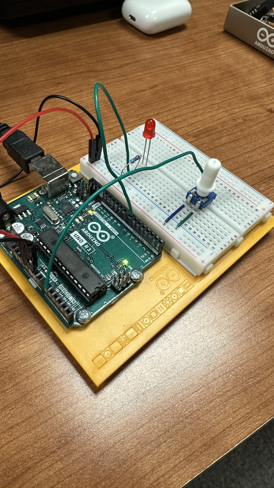
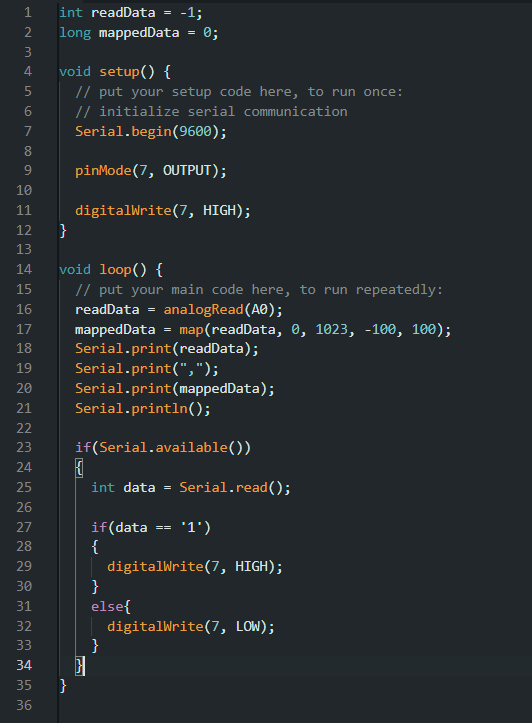
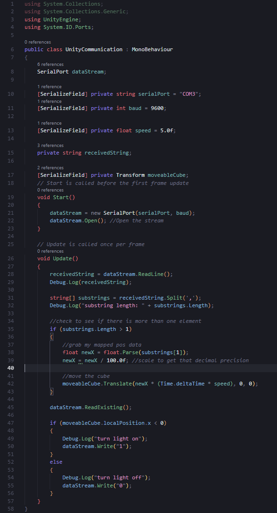

Arduino - Unity Practice
IGME 470
The Arduino-Unity practice project demonstrates how physical hardware can communicate with game engines through serial communication. This short project uses a potentiometer (knob) on an Arduino board to control a block in Unity, moving it left and right almost like a Pong paddle.
This opens the doors to many possibilities, showing how real-world inputs can create interactive gaming experiences.

The Arduino reads the value from the potentiometer and sends it through the serial port. Unity then receives these values and maps them to the block's position on screen.
I am actually doing my Senior Capstone currently, making an Alternative Controller with my group. As the dedicated Game Dev in that project, although I don't make the physical hardware, I regularly integrate Arduino inputs into Unity through serial communication.
Here is the code used in both the Arduino IDE and Unity to achieve this communication, parsing the serial data from the Arduino by the commas, and moving the block accordingly:

